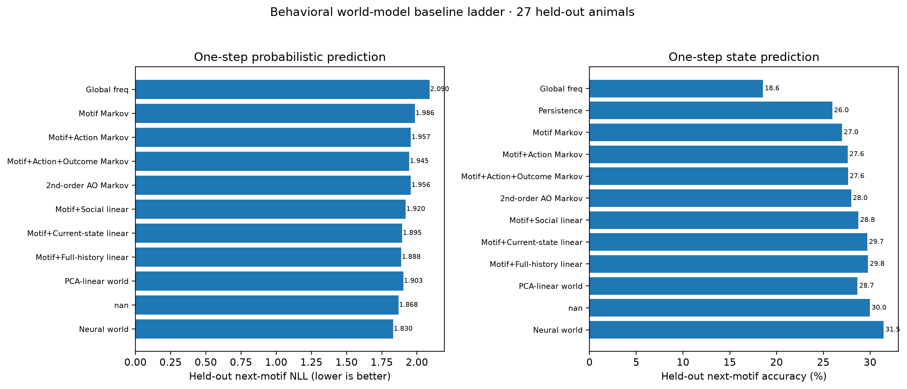
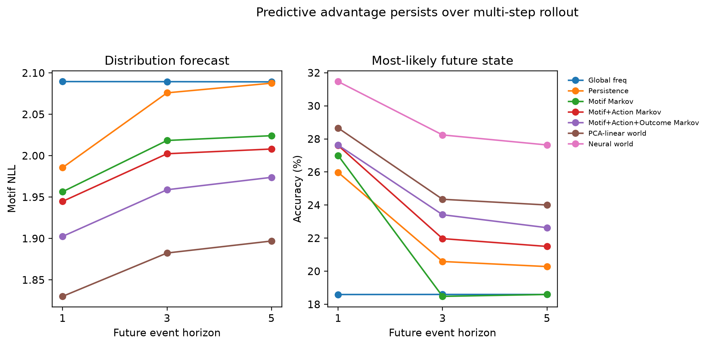
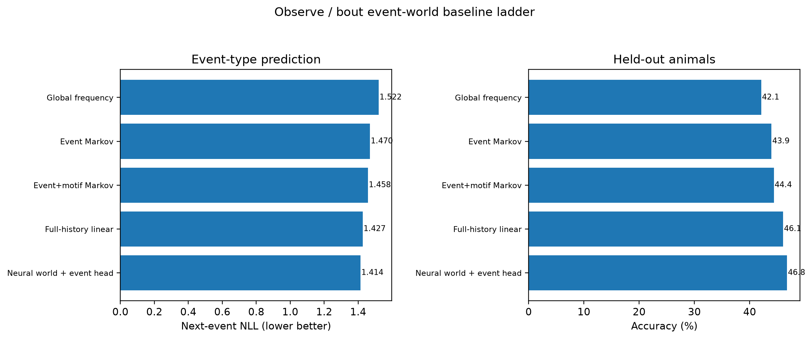
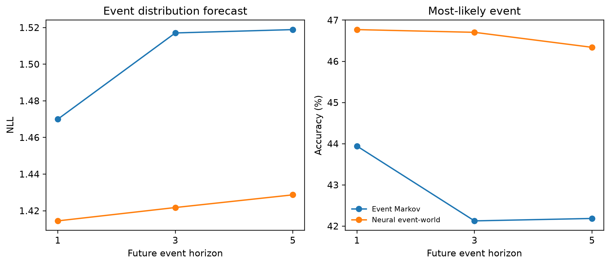

SAME REAL PRESENT
SOCIAL BEHAVIOR / VIRTUAL MOUSE / BEHAVIORAL ATLAS
A 12-motif behavioral atlas
Move from a Virtual Mouse behavior directly into its position in behavioral space. Every displayed point below is an exact contiguous motif run from the same session and can be played back from the Virtual Mouse reconstruction.
Social orient—
Social observation P—
Social distance—
Head directions OBS / DEM—
Hero example: latest Module 1.4 Virtual Mouse paired with exact frozen-v85 behavioral-space coordinates.
Explore the motifs
The behavioral space is organized into 12 motifs. Use Social orient 1/2/4/7 to see the established motif structure independent of model threshold, then switch to Observation model probability to see the conservative frame-wise v5 confidence layer. Each clickable run reports Social orient, Social observation probability, nose-to-nose Social distance, and the OBS / DEM head directions, while retaining the stricter validated observation-bout label separately. Click any run to play the exact Virtual Mouse segment, click empty space to place the comparison circle, drag to pan, and scroll or pinch to zoom.
HELD-OUT BEST-CASE VISUALIZATION · ANM4 D139
A future the social world model gets right
This held-out example compares the recorded future directly with saved model rollouts from the same real present. Each step and probability below comes from the real session/model outputs; no illustrative trajectory is drawn. The population benchmark remains available below.
Global benchmark across 27 held-out animals
The hero above is deliberately the clearest example; these population-level results establish that the advantage is not restricted to that event.




LEARNING DEPENDENCE · 27 LEARNERS VS 13 NON-LEARNERS
Learning rewrites the social-event transition graph
Training does not simply make every event easier to predict. Learners reorganize how behavior flows through Observe and Active feeding, while the world model continues to add predictive information beyond a strong stage-aware transition baseline.


SUPPORTED INTERPRETATION
Learning shifts the social-event graph toward sustained observation and effective feeding.
How to read this result
Click any dot to play · click/drag the circle to compare · drag elsewhere to pan · scroll/pinch to zoom
Selected examples
Click a point
Motif dictionary
Each motif is defined in the frozen v85 behavioral atlas. Social Observation statistics use the frame-wise model inference/probability; the stricter merged label is retained separately for validating representative video bouts.